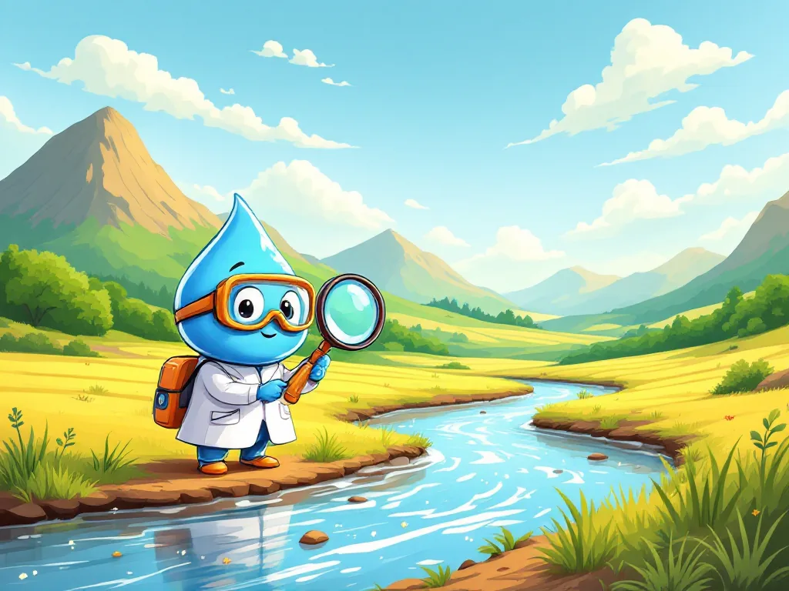
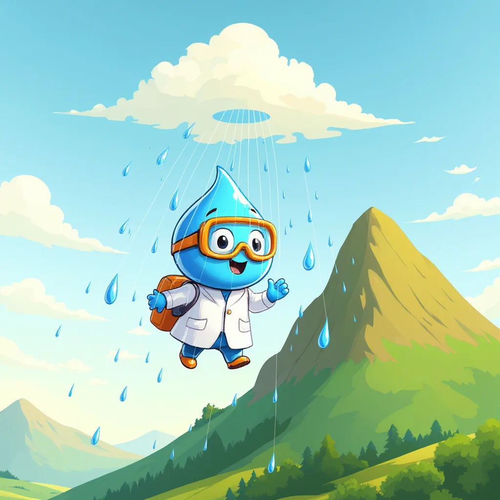
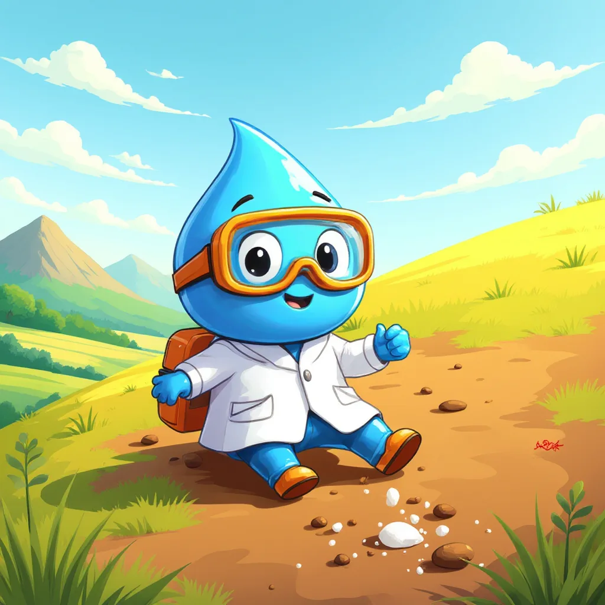
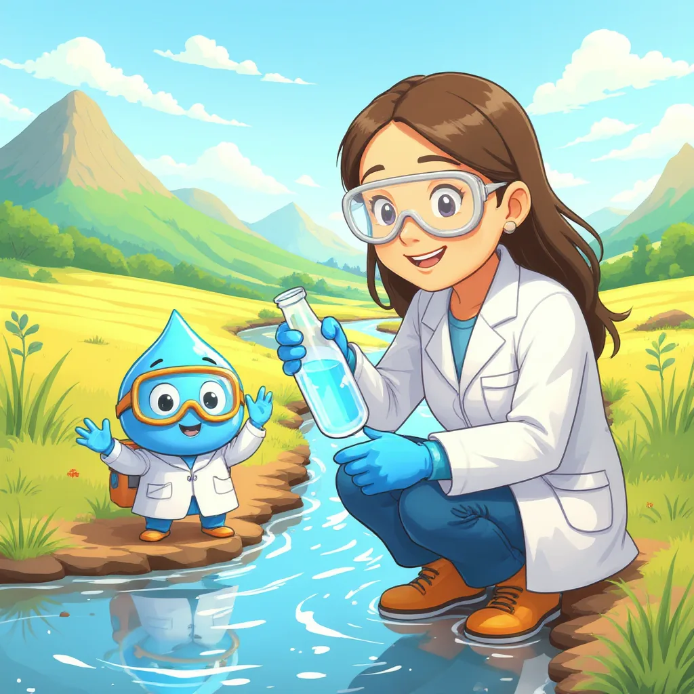
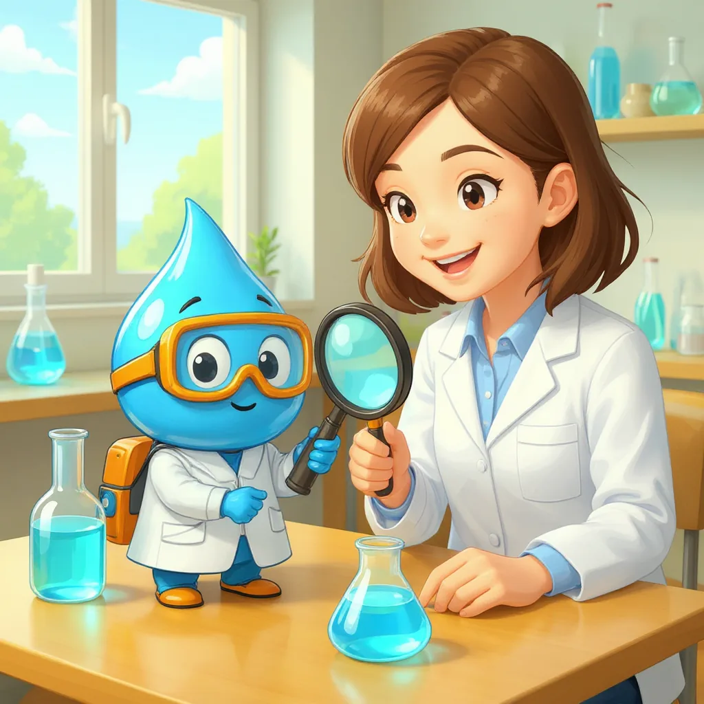
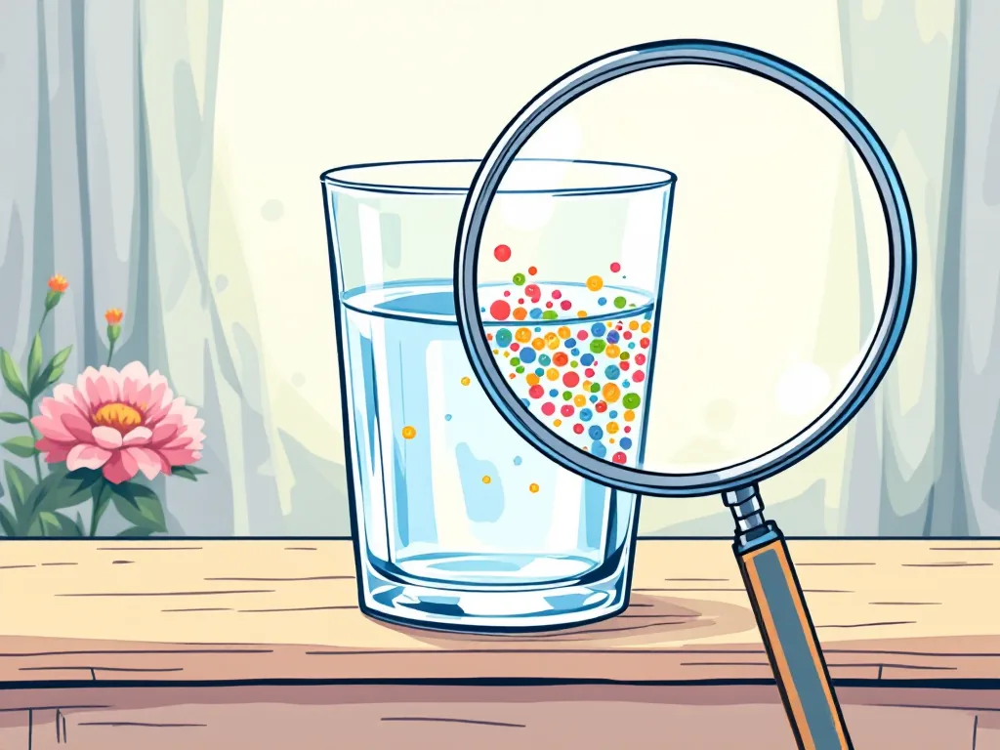
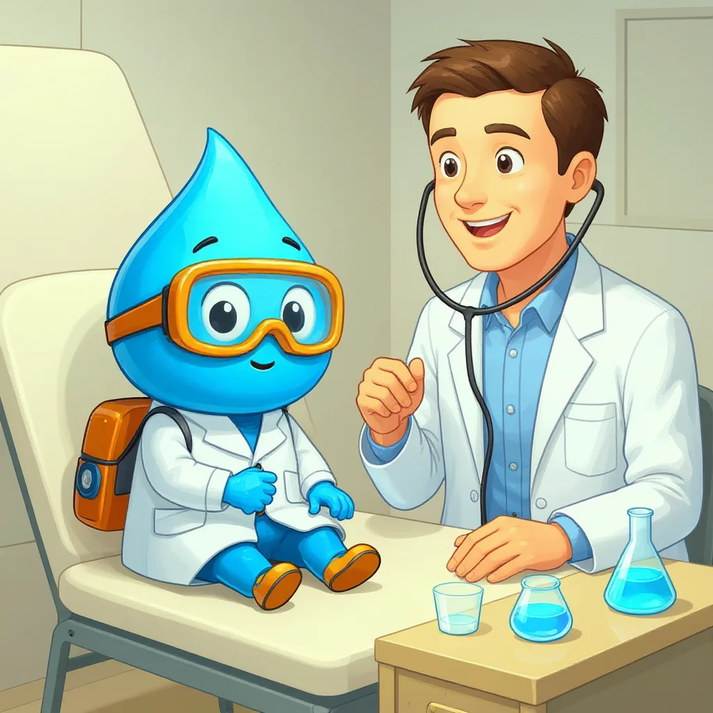

Introducción a la química ambiental
Un viaje para conocer las sustancias que hay en el agua.
¿Qué es la química ambiental?
Para empezar, la química ambiental es la ciencia que estudia las sustancias presentes en el aire, el suelo y el agua. Es decir, observa qué materiales hay en la naturaleza, cómo cambian y cómo pasan de un lugar a otro. Por ejemplo, cuando una gota de lluvia cae sobre un campo, lleva polvo y sales hasta el río. De esta manera, la química ambiental permite saber si esa agua sigue limpia o si necesita un tratamiento antes de usarse.

El viaje de Gotita
Mira las viñetas en orden.




Tres lugares que estudia la química ambiental
Toca cada tarjeta para darle la vuelta.

¿Por qué revisar el agua?
Además, el agua es la sustancia más importante para la vida en el planeta. Por esta razón, las personas, los animales y las plantas la necesitan todos los días para beber, crecer y mantenerse sanos. Sin embargo, no toda el agua transparente es segura, porque puede llevar sustancias invisibles, como sales o microbios. Así, revisar el agua con la química se parece a revisar una fruta por dentro antes de comerla.
Datos para descubrir
Presiona cada botón para descubrir un dato.
De hecho, si toda el agua del planeta cupiera en una botella de un litro, el agua dulce llenaría menos de dos cucharadas. Además, casi toda esa agua dulce está congelada en los polos o guardada bajo tierra.
Se parte de una botella de 1000 mL que representa toda el agua de la Tierra.
- Agua dulce, el 2,5 %: 1000 mL × 0,025 = 25 mL. Como una cucharada tiene unos 15 mL, son menos de dos cucharadas.
- Hielo, el 69 % de esos 25 mL: 25 × 0,69 ≈ 17 mL.
- Agua bajo tierra, el 30 %: 25 × 0,30 = 7,5 mL.
- Ríos y lagos, cerca del 1 %: 25 × 0,01 = 0,25 mL, es decir, unas cinco gotas.
Así, el agua fácil de tomar de ríos y lagos equivale a unas cinco gotas de toda la botella.
Por otra parte, en el laboratorio se miden propiedades como el pH, el color y la turbiedad. En otras palabras, se le hace al agua un chequeo, igual que un médico revisa a un paciente.

| En el médico | En el laboratorio del agua | Qué revela | Se explica en |
|---|---|---|---|
| Tomar la temperatura | Medir el pH | Si el agua es ácida, neutra o básica | Sección 4 |
| Mirar el color de la piel | Medir el color | Sustancias disueltas, como restos de hojas | Sección 4 |
| Revisar si hay inflamación | Medir la turbiedad | Partículas que flotan | Sección 4 |
| Buscar una infección | Buscar E. coli | Contaminación con heces | Sección 5 |
Mini-reto
¿Qué estudia la química ambiental?